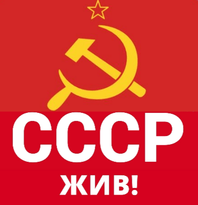
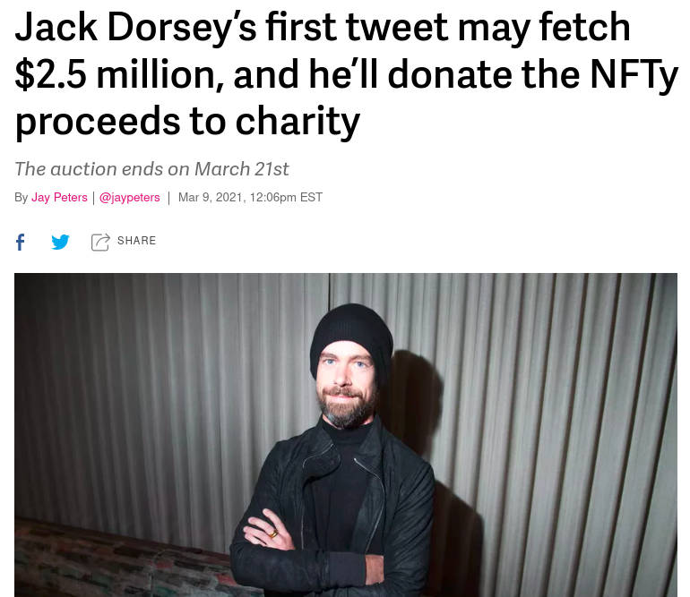
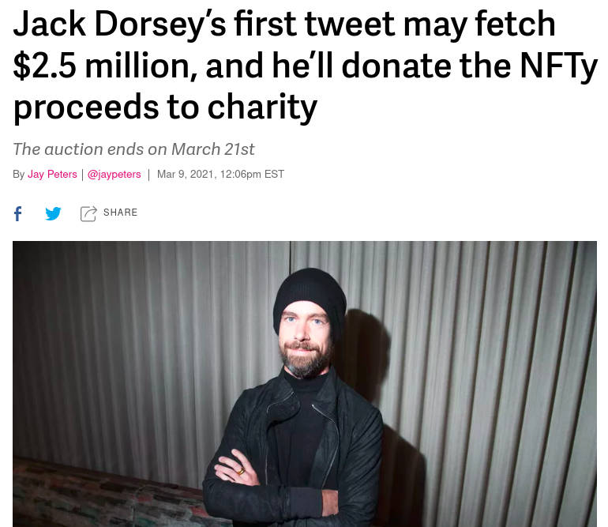

The Most Important Scarce Resource is Legitimacy
2021 Mar 23
See all posts
The Most Important Scarce Resource is Legitimacy
Special thanks to Karl Floersch, Aya Miyaguchi and Mr Silly for
ideas, feedback and review.
The Bitcoin and Ethereum blockchain ecosystems both spend far more on
network security - the goal of proof of work mining - than they do on
everything else combined. The Bitcoin blockchain has paid an average of
about $38 million per day in block rewards to miners since the
start of the year, plus about
$5m/day in transaction fees. The Ethereum blockchain comes in
second, at $19.5m/day in block rewards plus $18m/day in tx
fees. Meanwhile, the Ethereum Foundation's annual budget, paying for
research, protocol development, grants and all sorts of other expenses,
is a mere $30 million per year. Non-EF-sourced funding exists
too, but it is at most only a few times larger. Bitcoin ecosystem
expenditures on R&D are likely even lower. Bitcoin ecosystem R&D
is largely funded by companies (with $250m total raised so far according
to this page), and this
report suggests about 57 employees; assuming fairly high salaries
and many paid developers not being counted, that works out to about $20m
per year.

Clearly, this expenditure pattern is a massive misallocation of
resources. The last 20% of network hashpower provides
vastly less value to the ecosystem than those same resources
would if they had gone into research and core protocol development. So
why not just.... cut the PoW budget by 20% and redirect the funds to those
other things instead?
The standard answer to this puzzle has to do with concepts like "public
choice theory" and "Schelling
fences": even though we could easily identify some valuable public
goods to redirect some funding to as a one-off, making a regular
institutionalized pattern of such decisions carries risks of
political chaos and capture that are in the long run not worth it. But
regardless of the reasons why, we are faced with this interesting fact
that the organisms that are the Bitcoin and Ethereum ecosystems
are capable of summoning up billions of dollars of capital, but have
strange and hard-to-understand restrictions on where that capital can
go.
The powerful social force that is creating this effect is worth
understanding. As we are going to see, it's also the same social force
behind why the Ethereum ecosystem is capable of summoning up these
resources in the first place (and the technologically near-identical
Ethereum Classic is not). It's also a social force that is key to
helping a chain recover from a 51% attack. And it's a social force that
underlies all sorts of extremely powerful mechanisms far beyond the
blockchain space. For reasons that will be clear in the upcoming
sections, I will give this powerful social force a name:
legitimacy.
Coins can be owned by
social contracts
To better understand the force that we are getting at, another
important example is the epic saga of Steem and Hive. In early 2020, Justin
Sun bought Steem-the-company,
which is not the same thing as Steem-the-blockchain but did hold about
20% of the STEEM token supply. The community, naturally, did not trust
Justin Sun. So they made an on-chain vote to formalize what they
considered to be a longstanding "gentleman's agreement" that
Steem-the-company's coins were held in trust for the common good of
Steem-the-blockchain and should not be used to vote. With the help of
coins held by exchanges, Justin Sun made a counterattack, and won
control of enough delegates to unilaterally control the chain. The
community saw no further in-protocol options. So instead they made a
fork of Steem-the-blockchain, called Hive, and copied over all of the
STEEM token balances - except those, including Justin Sun's, which
participated in the attack.

And they got plenty of applications on board. If they
had not managed this, far more users would have either stayed on Steem
or moved to some different project entirely.
The lesson that we can learn from this situation is this:
Steem-the-company never actually "owned" the coins. If they
did, they would have had the practical ability to use,
enjoy and abuse the coins in whatever way they wanted. But in
reality, when the company tried to enjoy and abuse the coins in a way
that the community did not like, they were successfully
stopped. What's going on here is a pattern of a similar type to
what we saw with the not-yet-issued Bitcoin and Ethereum coin rewards:
the coins were ultimately owned not by a cryptographic key, but by some
kind of social contract.
We can apply the same reasoning to many other structures in the
blockchain space. Consider, for example, the ENS root multisig. The root
multisig is controlled by seven prominent ENS and Ethereum community
members. But what would happen if four of them were to come together and
"upgrade" the registrar to one that transfers all the best domains to
themselves? Within the context of ENS-the-smart-contract-system, they
have the complete and unchallengeable ability to do this. But if they
actually tried to abuse their technical ability in this way, what would
happen is clear to anyone: they would be ostracized from the community,
the remaining ENS community members would make a new ENS contract that
restores the original domain owners, and every Ethereum application that
uses ENS would repoint their UI to use the new one.
This goes well beyond smart contract structures. Why is it that Elon
Musk can sell an NFT of Elon Musk's tweet, but Jeff Bezos would have a
much harder time doing the same? Elon and Jeff have the same level of
ability to screenshot Elon's tweet and stick it into an NFT dapp, so
what's the difference? To anyone who has even a basic intuitive
understanding of human social psychology (or the fake
art scene), the answer is obvious: Elon selling Elon's tweet is
the real thing, and Jeff doing the same is not. Once again,
millions of dollars of value are being controlled and allocated, not by
individuals or cryptographic keys, but by social conceptions of
legitimacy.
And, going even further out, legitimacy governs all sorts of social
status games, intellectual
discourse, language, property rights, political systems and national
borders. Even blockchain consensus works the same way: the only
difference between a soft fork that gets accepted by the community and a
51% censorship attack after which the community coordinates an extra-protocol
recovery fork to take out the attacker is legitimacy.
So what is legitimacy?
See also: my earlier post on blockchain
governance.
To understand the workings of legitimacy, we need to dig down into
some game theory. There are many situations in life that demand
coordinated behavior: if you act in a certain way
alone, you are likely to get nowhere (or worse), but if everyone acts
together a desired result can be achieved.
An abstract coordination game. You benefit heavily
from making the same move as everyone else.
One natural example is driving on the left vs right side of the road:
it doesn't really matter what side of the road people drive on,
as long as they drive on the same side. If you switch sides at the same
time as everyone else, and most people prefer the new arrangement, there
can be a net benefit. But if you switch sides alone, no matter how much
you prefer driving on the other side, the net result for you will be
quite negative.
Now, we are ready to define legitimacy.
Legitimacy is a pattern of higher-order
acceptance. An outcome in some social context is legitimate if
the people in that social context broadly accept and play their part in
enacting that outcome, and each individual person does so because they
expect everyone else to do the same.
Legitimacy is a phenomenon that arises naturally in coordination
games. If you're not in a coordination game, there's no reason to act
according to your expectation of how other people will act, and so
legitimacy is not important. But as we have seen, coordination games are
everywhere in society, and so legitimacy turns out to be quite important
indeed. In almost any environment with coordination games that exists
for long enough, there inevitably emerge some mechanisms that can choose
which decision to take. These mechanisms are powered by an established
culture that everyone pays attention to these mechanisms and (usually)
does what they say. Each person reasons that because everyone
else follows these mechanisms, if they do something different they
will only create conflict and suffer, or at least be left in a lonely
forked ecosystem all by themselves. If a mechanism successfully has the
ability to make these choices, then that mechanism has legitimacy.
A Byzantine general rallying his troops forward. The
purpose of this isn't just to make the soldiers feel brave and excited,
but also to reassure them that everyone else feels brave and excited and
will charge forward as well, so an individual soldier is not just
committing suicide by charging forward alone.
In any context where there's a coordination game that has existed for
long enough, there's likely a conception of legitimacy. And
blockchains are full of coordination games. Which client
software do you run? Which decentralized domain name registry do you ask
for which address corresponds to a .eth name? Which copy of the Uniswap
contract do you accept as being "the" Uniswap exchange? Even NFTs are a
coordination game. The two largest parts of an NFT's value are (i) pride
in holding the NFT and ability to show off your ownership, and (ii) the
possibility of selling it in the future. For both of these components,
it's really really important that whatever NFT you buy is recognized as
legitimate by everyone else. In all of these cases, there's a
great benefit to having the same answer as everyone else, and the
mechanism that determines that equilibrium has a lot of power.
Theories of legitimacy
There are many different ways in which legitimacy can come about. In
general, legitimacy arises because the thing that gains legitimacy is
psychologically appealing to most people. But of course, people's
psychological intuitions can be quite complex. It is impossible to make
a full listing of theories of legitimacy, but we can start with a
few:
- Legitimacy by brute force: someone convinces
everyone that they are powerful enough to impose their will and
resisting them will be very hard. This drives most people to submit
because each person expects that everyone else will be too
scared to resist as well.
- Legitimacy by continuity: if something was
legitimate at time T, it is by default legitimate at time T+1.
- Legitimacy by fairness: something can become
legitimate because it satisfies an intuitive notion of fairness. See
also: my post on
credible neutrality, though note that this is not the only kind of
fairness.
- Legitimacy by process: if a process is legitimate,
the outputs of that process gain legitimacy (eg. laws passed by
democracies are sometimes described in this way).
- Legitimacy by performance: if the outputs of a
process lead to results that satisfy people, then that process can gain
legitimacy (eg. successful dictatorships are sometimes described in this
way).
- Legitimacy by participation: if people participate
in choosing an outcome, they are more likely to consider it legitimate.
This is similar to fairness, but not quite: it rests on a psychological
desire to be consistent with your previous actions.
Note that legitimacy is a descriptive concept; something can be
legitimate even if you personally think that it is horrible. That said,
if enough people think that an outcome is horrible, there is a higher
chance that some event will happen in the future that will cause that
legitimacy to go away, often at first gradually, then suddenly.
Legitimacy
is a powerful social technology, and we should use it
The public goods funding situation in cryptocurrency ecosystems is
fairly poor. There are hundreds of billions of dollars of capital
flowing around, but public goods that are key to that capital's ongoing
survival are receiving only tens of millions of dollars per year of
funding.
There are two ways to respond to this fact. The first way is to be
proud of these limitations and the valiant, even if not particularly
effective, efforts that your community makes to work around them. This
seems to be the route that the Bitcoin ecosystem often takes:
The personal self-sacrifice of the teams funding core development is
of course admirable, but it's admirable the same way that Eliud Kipchoge
running a marathon in under 2 hours is admirable: it's an impressive
show of human fortitude, but it's not the future of transportation (or,
in this case, public goods funding). Much like we have much better
technologies to allow people to move 42 km in under an hour without
exceptional fortitude and years of training, we should also
focus on building better social technologies to fund public goods at the
scales that we need, and as a systemic part of our economic ecology and
not one-off acts of philanthropic initiative.
Now, let us get back to cryptocurrency. A major power of
cryptocurrency (and other digital assets such as domain names, virtual
land and NFTs) is that it allows communities to summon up large amounts
of capital without any individual person needing to personally donate
that capital. However, this capital is constrained by conceptions of
legitimacy: you cannot simply allocate it to a centralized team
without compromising on what makes it valuable. While Bitcoin and
Ethereum do already rely on conceptions of legitimacy to respond
to 51% attacks, using conceptions of legitimacy to guide in-protocol
funding of public goods is much harder. But at the increasingly
rich
application layer where new protocols are constantly being created, we
have quite a bit more flexibility in where that funding could go.
Legitimacy in Bitshares
One of the long-forgotten, but in my opinion very innovative, ideas
from the early cryptocurrency space was the Bitshares
social
consensus model. Essentially, Bitshares described itself as a
community of people (PTS and AGS
holders) who were willing to help collectively support an ecosystem
of new projects, but for a project to be welcomed into the ecosystem, it
would have to allocate 10% of its token supply to existing PTS and AGS
holders.
Now, of course anyone can make a project that does not allocate any
coins to PTS/AGS holders, or even fork a project that did make an
allocation and take the allocation out. But, as Dan Larimer says:
You cannot force anyone to do anything, but in this market is is all
network effect. If someone comes up with a compelling implementation
then you can adopt the entire PTS community for the cost of generating a
new genesis block. The individual who decided to start from scratch
would have to build an entire new community around his system.
Considering the network effect, I suspect that the coin that honors
ProtoShares will win.
This is also a conception of legitimacy: any project that makes the
allocation to PTS/AGS holders will get the attention and support of the
community (and it will be worthwhile for each individual community
member to take an interest in the project because the rest of the
community is doing so as well), and any project that does not make the
allocation will not. Now, this is certainly not a conception of
legitimacy that we want to replicate verbatim - there is little appetite
in the Ethereum community for enriching a small group of early adopters
- but the core concept can be adapted into something much more socially
valuable.
Extending the model to
Ethereum
Blockchain ecosystems, Ethereum included, value freedom and
decentralization. But the public goods ecology of most of these
blockchains is, regrettably, still quite authority-driven and
centralized: whether it's Ethereum, Zcash or any other major blockchain,
there is typically one (or at most 2-3) entities that far outspend
everyone else, giving independent teams that want to build public goods
few options. I call this model of public goods funding "Central Capital
Coordinators for Public-goods" (CCCPs).

This state of affairs is not the fault of the organizations
themselves, who are typically valiantly doing their best to support the
ecosystem. Rather, it's the rules of the ecosystem that are being
unfair to that organization, because they hold the organization
to an unfairly high standard. Any single centralized
organization will inevitably have blindspots and at least a few
categories and teams whose value that it fails to understand; this is
not because anyone involved is doing anything wrong, but because such
perfection is beyond the reach of small groups of humans. So there is
great value in creating a more diversified and resilient approach to
public goods funding to take the pressure off any single
organization.
Fortunately, we already have the seed of such an alternative! The
Ethereum application-layer ecosystem exists, is growing increasingly
powerful, and is already showing its public-spiritedness. Companies like
Gnosis have been contributing to Ethereum client development, and
various Ethereum DeFi projects have donated hundreds of thousands of
dollars to the Gitcoin Grants matching pool.

Gitcoin Grants has already achieved a high level of legitimacy: its
public goods funding mechanism, quadratic funding, has
proven itself to be credibly neutral
and effective at reflecting the community's priorities and values and
plugging the holes left by existing funding mechanisms. Sometimes, top
Gitcoin Grants matching recipients are even used as inspiration for
grants by other and more centralized grant-giving entities. The Ethereum
Foundation itself has played a key role in supporting this
experimentation and diversity, incubating efforts like Gitcoin Grants,
along with MolochDAO and others, that then go on to get broader
community support.
We can make this nascent public goods-funding ecosystem even stronger
by taking the Bitshares model, and making a modification: instead of
giving the strongest community support to projects who allocate tokens
to a small oligarchy who bought PTS or AGS back in 2013, we
support projects that contribute a small portion of their treasuries
toward the public goods that make them and the ecosystem that they
depend on possible. And, crucially, we can deny these benefits
to projects that fork an existing project and do not give back value to
the broader ecosystem.
There are many ways to do support public goods: making a long-term
commitment to support the Gitcoin Grants matching pool, supporting
Ethereum client development (also a reasonably credibly-neutral task as
there's a clear definition of what an Ethereum client is), or
even running one's own grant program whose scope goes beyond that
particular application-layer project itself. The easiest way to agree on
what counts as sufficient support is to agree on how much - for example,
5% of a project's spending going to support the broader ecosystem and
another 1% going to public goods that go beyond the blockchain space -
and rely on good faith to choose where that funding would go.
Of course, there are limits to the value of this kind of community
support. If a competing project (or even a fork of an existing project)
gives its users a much better offering, then users are going to flock to
it, regardless of how many people yell at them to instead use some
alternative that they consider to be more pro-social.
But these limits are different in different contexts; sometimes the
community's leverage is weak, but at other times it's quite strong. An
interesting case study in this regard is the case of Tether vs DAI. Tether has
many
scandals,
but despite this traders use Tether to hold and move around dollars all
the time. The more decentralized and transparent DAI, despite its benefits, is unable to
take away much of Tether's market share, at least as far as traders go.
But where DAI excels is applications: Augur uses DAI, xDai uses DAI, PoolTogether uses DAI, zk.money plans to use DAI, and the list goes
on. What dapps use USDT? Far fewer.
Hence, though the power of community-driven legitimacy effects is not
infinite, there is nevertheless considerable room for leverage, enough
to encourage projects to direct at least a few percent of their budgets
to the broader ecosystem. There's even a selfish reason to participate
in this equilibrium: if you were the developer of an Ethereum wallet, or
an author of a podcast or newsletter, and you saw two competing
projects, one of which contributes significantly to ecosystem-level
public goods including yourself and one which does not, for which one
would you do your utmost to help them secure more market share?
NFTs: supporting
public goods beyond Ethereum
The concept of supporting public goods through value generated "out
of the ether" by publicly supported conceptions of legitimacy has value
going far beyond the Ethereum ecosystem. An important and immediate
challenge and opportunity is NFTs. NFTs stand a great chance of
significantly helping many kinds of public goods, especially of the
creative variety, at least partially solve their chronic and
systemic funding deficiencies.

Actually a very admirable first step.
But they could also be a missed opportunity: there is little social
value in helping Elon Musk earn yet another $1 million by selling his
tweet when, as far as we can tell, the money is just going to himself
(and, to his credit, he eventually decided
not to sell). If NFTs simply become a casino that largely benefits
already-wealthy celebrities, that would be a far less interesting
outcome.
Fortunately, we have the ability to help shape the
outcome. Which NFTs people find attractive to buy, and which
ones they do not, is a question of legitimacy: if everyone agrees that
one NFT is interesting and another NFT is lame, then people will
strongly prefer buying the first, because it would have both higher
value for bragging rights and personal pride in holding it, and because
it could be resold for more because everyone else is thinking in the
same way. If the conception of legitimacy for NFTs can be pulled in a
good direction, there is an opportunity to establish a solid channel of
funding to artists, charities and others.
Here are two potential ideas:
- Some institution (or even DAO) could "bless" NFTs in exchange for a
guarantee that some portion of the revenues goes toward a charitable
cause, ensuring that multiple groups benefit at the same time. This
blessing could even come with an official categorization: is the NFT
dedicated to global poverty relief, scientific research, creative arts,
local journalism, open source software development, empowering
marginalized communities, or something else?
- We can work with social media platforms to make NFTs more visible on
people's profiles, giving buyers a way to show the values that they
committed not just their words but their hard-earned money to. This
could be combined with (1) to nudge users toward NFTs that contribute to
valuable social causes.
There are definitely more ideas, but this is an area that certainly
deserves more active coordination and thought.
In summary
- The concept of legitimacy (higher-order acceptance) is very
powerful. Legitimacy appears in any context where there is
coordination,
and especially on the internet, coordination is everywhere.
- There are different ways in which legitimacy comes to be:
brute force, continuity, fairness, process, performance
and participation are among the important ones.
- Cryptocurrency is powerful because it lets us summon up large pools
of capital by collective economic will, and these pools of capital are,
at the beginning, not controlled by any person. Rather, these
pools of capital are controlled directly by concepts of
legitimacy.
- It's too risky to start doing public goods funding by printing
tokens at the base layer. Fortunately, however, Ethereum has a very rich
application-layer ecosystem, where we have much more
flexibility. This is in part because there's an opportunity not just to
influence existing projects, but also shape new ones that will come into
existence in the future.
- Application-layer projects that support public goods in the
community should get the support of the community, and this is
a big deal. The example of DAI shows that this support really
matters!
- The Etherem ecosystem cares about mechanism design and innovating at
the social layer. The Ethereum ecosystem's own public goods
funding challenges are a great place to start!
- But this goes far beyond just Ethereum itself. NFTs are one example
of a large pool of capital that depends on concepts of legitimacy.
The NFT industry could be a significant boon to
artists, charities and other public goods providers far beyond our own
virtual corner of the world, but this outcome is not
predetermined; it depends on active coordination and
support.
The Most Important Scarce Resource is Legitimacy
2021 Mar 23 See all postsSpecial thanks to Karl Floersch, Aya Miyaguchi and Mr Silly for ideas, feedback and review.
The Bitcoin and Ethereum blockchain ecosystems both spend far more on network security - the goal of proof of work mining - than they do on everything else combined. The Bitcoin blockchain has paid an average of about $38 million per day in block rewards to miners since the start of the year, plus about $5m/day in transaction fees. The Ethereum blockchain comes in second, at $19.5m/day in block rewards plus $18m/day in tx fees. Meanwhile, the Ethereum Foundation's annual budget, paying for research, protocol development, grants and all sorts of other expenses, is a mere $30 million per year. Non-EF-sourced funding exists too, but it is at most only a few times larger. Bitcoin ecosystem expenditures on R&D are likely even lower. Bitcoin ecosystem R&D is largely funded by companies (with $250m total raised so far according to this page), and this report suggests about 57 employees; assuming fairly high salaries and many paid developers not being counted, that works out to about $20m per year.
Clearly, this expenditure pattern is a massive misallocation of resources. The last 20% of network hashpower provides vastly less value to the ecosystem than those same resources would if they had gone into research and core protocol development. So why not just.... cut the PoW budget by 20% and redirect the funds to those other things instead?
The standard answer to this puzzle has to do with concepts like "public choice theory" and "Schelling fences": even though we could easily identify some valuable public goods to redirect some funding to as a one-off, making a regular institutionalized pattern of such decisions carries risks of political chaos and capture that are in the long run not worth it. But regardless of the reasons why, we are faced with this interesting fact that the organisms that are the Bitcoin and Ethereum ecosystems are capable of summoning up billions of dollars of capital, but have strange and hard-to-understand restrictions on where that capital can go.
The powerful social force that is creating this effect is worth understanding. As we are going to see, it's also the same social force behind why the Ethereum ecosystem is capable of summoning up these resources in the first place (and the technologically near-identical Ethereum Classic is not). It's also a social force that is key to helping a chain recover from a 51% attack. And it's a social force that underlies all sorts of extremely powerful mechanisms far beyond the blockchain space. For reasons that will be clear in the upcoming sections, I will give this powerful social force a name: legitimacy.
Coins can be owned by social contracts
To better understand the force that we are getting at, another important example is the epic saga of Steem and Hive. In early 2020, Justin Sun bought Steem-the-company, which is not the same thing as Steem-the-blockchain but did hold about 20% of the STEEM token supply. The community, naturally, did not trust Justin Sun. So they made an on-chain vote to formalize what they considered to be a longstanding "gentleman's agreement" that Steem-the-company's coins were held in trust for the common good of Steem-the-blockchain and should not be used to vote. With the help of coins held by exchanges, Justin Sun made a counterattack, and won control of enough delegates to unilaterally control the chain. The community saw no further in-protocol options. So instead they made a fork of Steem-the-blockchain, called Hive, and copied over all of the STEEM token balances - except those, including Justin Sun's, which participated in the attack.
And they got plenty of applications on board. If they had not managed this, far more users would have either stayed on Steem or moved to some different project entirely.
The lesson that we can learn from this situation is this: Steem-the-company never actually "owned" the coins. If they did, they would have had the practical ability to use, enjoy and abuse the coins in whatever way they wanted. But in reality, when the company tried to enjoy and abuse the coins in a way that the community did not like, they were successfully stopped. What's going on here is a pattern of a similar type to what we saw with the not-yet-issued Bitcoin and Ethereum coin rewards: the coins were ultimately owned not by a cryptographic key, but by some kind of social contract.
We can apply the same reasoning to many other structures in the blockchain space. Consider, for example, the ENS root multisig. The root multisig is controlled by seven prominent ENS and Ethereum community members. But what would happen if four of them were to come together and "upgrade" the registrar to one that transfers all the best domains to themselves? Within the context of ENS-the-smart-contract-system, they have the complete and unchallengeable ability to do this. But if they actually tried to abuse their technical ability in this way, what would happen is clear to anyone: they would be ostracized from the community, the remaining ENS community members would make a new ENS contract that restores the original domain owners, and every Ethereum application that uses ENS would repoint their UI to use the new one.
This goes well beyond smart contract structures. Why is it that Elon Musk can sell an NFT of Elon Musk's tweet, but Jeff Bezos would have a much harder time doing the same? Elon and Jeff have the same level of ability to screenshot Elon's tweet and stick it into an NFT dapp, so what's the difference? To anyone who has even a basic intuitive understanding of human social psychology (or the fake art scene), the answer is obvious: Elon selling Elon's tweet is the real thing, and Jeff doing the same is not. Once again, millions of dollars of value are being controlled and allocated, not by individuals or cryptographic keys, but by social conceptions of legitimacy.
And, going even further out, legitimacy governs all sorts of social status games, intellectual discourse, language, property rights, political systems and national borders. Even blockchain consensus works the same way: the only difference between a soft fork that gets accepted by the community and a 51% censorship attack after which the community coordinates an extra-protocol recovery fork to take out the attacker is legitimacy.
So what is legitimacy?
See also: my earlier post on blockchain governance.
To understand the workings of legitimacy, we need to dig down into some game theory. There are many situations in life that demand coordinated behavior: if you act in a certain way alone, you are likely to get nowhere (or worse), but if everyone acts together a desired result can be achieved.
An abstract coordination game. You benefit heavily from making the same move as everyone else.
One natural example is driving on the left vs right side of the road: it doesn't really matter what side of the road people drive on, as long as they drive on the same side. If you switch sides at the same time as everyone else, and most people prefer the new arrangement, there can be a net benefit. But if you switch sides alone, no matter how much you prefer driving on the other side, the net result for you will be quite negative.
Now, we are ready to define legitimacy.
Legitimacy is a phenomenon that arises naturally in coordination games. If you're not in a coordination game, there's no reason to act according to your expectation of how other people will act, and so legitimacy is not important. But as we have seen, coordination games are everywhere in society, and so legitimacy turns out to be quite important indeed. In almost any environment with coordination games that exists for long enough, there inevitably emerge some mechanisms that can choose which decision to take. These mechanisms are powered by an established culture that everyone pays attention to these mechanisms and (usually) does what they say. Each person reasons that because everyone else follows these mechanisms, if they do something different they will only create conflict and suffer, or at least be left in a lonely forked ecosystem all by themselves. If a mechanism successfully has the ability to make these choices, then that mechanism has legitimacy.
A Byzantine general rallying his troops forward. The purpose of this isn't just to make the soldiers feel brave and excited, but also to reassure them that everyone else feels brave and excited and will charge forward as well, so an individual soldier is not just committing suicide by charging forward alone.
In any context where there's a coordination game that has existed for long enough, there's likely a conception of legitimacy. And blockchains are full of coordination games. Which client software do you run? Which decentralized domain name registry do you ask for which address corresponds to a .eth name? Which copy of the Uniswap contract do you accept as being "the" Uniswap exchange? Even NFTs are a coordination game. The two largest parts of an NFT's value are (i) pride in holding the NFT and ability to show off your ownership, and (ii) the possibility of selling it in the future. For both of these components, it's really really important that whatever NFT you buy is recognized as legitimate by everyone else. In all of these cases, there's a great benefit to having the same answer as everyone else, and the mechanism that determines that equilibrium has a lot of power.
Theories of legitimacy
There are many different ways in which legitimacy can come about. In general, legitimacy arises because the thing that gains legitimacy is psychologically appealing to most people. But of course, people's psychological intuitions can be quite complex. It is impossible to make a full listing of theories of legitimacy, but we can start with a few:
Note that legitimacy is a descriptive concept; something can be legitimate even if you personally think that it is horrible. That said, if enough people think that an outcome is horrible, there is a higher chance that some event will happen in the future that will cause that legitimacy to go away, often at first gradually, then suddenly.
Legitimacy is a powerful social technology, and we should use it
The public goods funding situation in cryptocurrency ecosystems is fairly poor. There are hundreds of billions of dollars of capital flowing around, but public goods that are key to that capital's ongoing survival are receiving only tens of millions of dollars per year of funding.
There are two ways to respond to this fact. The first way is to be proud of these limitations and the valiant, even if not particularly effective, efforts that your community makes to work around them. This seems to be the route that the Bitcoin ecosystem often takes:
The personal self-sacrifice of the teams funding core development is of course admirable, but it's admirable the same way that Eliud Kipchoge running a marathon in under 2 hours is admirable: it's an impressive show of human fortitude, but it's not the future of transportation (or, in this case, public goods funding). Much like we have much better technologies to allow people to move 42 km in under an hour without exceptional fortitude and years of training, we should also focus on building better social technologies to fund public goods at the scales that we need, and as a systemic part of our economic ecology and not one-off acts of philanthropic initiative.
Now, let us get back to cryptocurrency. A major power of cryptocurrency (and other digital assets such as domain names, virtual land and NFTs) is that it allows communities to summon up large amounts of capital without any individual person needing to personally donate that capital. However, this capital is constrained by conceptions of legitimacy: you cannot simply allocate it to a centralized team without compromising on what makes it valuable. While Bitcoin and Ethereum do already rely on conceptions of legitimacy to respond to 51% attacks, using conceptions of legitimacy to guide in-protocol funding of public goods is much harder. But at the increasingly rich application layer where new protocols are constantly being created, we have quite a bit more flexibility in where that funding could go.
Legitimacy in Bitshares
One of the long-forgotten, but in my opinion very innovative, ideas from the early cryptocurrency space was the Bitshares social consensus model. Essentially, Bitshares described itself as a community of people (PTS and AGS holders) who were willing to help collectively support an ecosystem of new projects, but for a project to be welcomed into the ecosystem, it would have to allocate 10% of its token supply to existing PTS and AGS holders.
Now, of course anyone can make a project that does not allocate any coins to PTS/AGS holders, or even fork a project that did make an allocation and take the allocation out. But, as Dan Larimer says:
This is also a conception of legitimacy: any project that makes the allocation to PTS/AGS holders will get the attention and support of the community (and it will be worthwhile for each individual community member to take an interest in the project because the rest of the community is doing so as well), and any project that does not make the allocation will not. Now, this is certainly not a conception of legitimacy that we want to replicate verbatim - there is little appetite in the Ethereum community for enriching a small group of early adopters - but the core concept can be adapted into something much more socially valuable.
Extending the model to Ethereum
Blockchain ecosystems, Ethereum included, value freedom and decentralization. But the public goods ecology of most of these blockchains is, regrettably, still quite authority-driven and centralized: whether it's Ethereum, Zcash or any other major blockchain, there is typically one (or at most 2-3) entities that far outspend everyone else, giving independent teams that want to build public goods few options. I call this model of public goods funding "Central Capital Coordinators for Public-goods" (CCCPs).
This state of affairs is not the fault of the organizations themselves, who are typically valiantly doing their best to support the ecosystem. Rather, it's the rules of the ecosystem that are being unfair to that organization, because they hold the organization to an unfairly high standard. Any single centralized organization will inevitably have blindspots and at least a few categories and teams whose value that it fails to understand; this is not because anyone involved is doing anything wrong, but because such perfection is beyond the reach of small groups of humans. So there is great value in creating a more diversified and resilient approach to public goods funding to take the pressure off any single organization.
Fortunately, we already have the seed of such an alternative! The Ethereum application-layer ecosystem exists, is growing increasingly powerful, and is already showing its public-spiritedness. Companies like Gnosis have been contributing to Ethereum client development, and various Ethereum DeFi projects have donated hundreds of thousands of dollars to the Gitcoin Grants matching pool.
Gitcoin Grants has already achieved a high level of legitimacy: its public goods funding mechanism, quadratic funding, has proven itself to be credibly neutral and effective at reflecting the community's priorities and values and plugging the holes left by existing funding mechanisms. Sometimes, top Gitcoin Grants matching recipients are even used as inspiration for grants by other and more centralized grant-giving entities. The Ethereum Foundation itself has played a key role in supporting this experimentation and diversity, incubating efforts like Gitcoin Grants, along with MolochDAO and others, that then go on to get broader community support.
We can make this nascent public goods-funding ecosystem even stronger by taking the Bitshares model, and making a modification: instead of giving the strongest community support to projects who allocate tokens to a small oligarchy who bought PTS or AGS back in 2013, we support projects that contribute a small portion of their treasuries toward the public goods that make them and the ecosystem that they depend on possible. And, crucially, we can deny these benefits to projects that fork an existing project and do not give back value to the broader ecosystem.
There are many ways to do support public goods: making a long-term commitment to support the Gitcoin Grants matching pool, supporting Ethereum client development (also a reasonably credibly-neutral task as there's a clear definition of what an Ethereum client is), or even running one's own grant program whose scope goes beyond that particular application-layer project itself. The easiest way to agree on what counts as sufficient support is to agree on how much - for example, 5% of a project's spending going to support the broader ecosystem and another 1% going to public goods that go beyond the blockchain space - and rely on good faith to choose where that funding would go.
Does the community actually have that much leverage?
Of course, there are limits to the value of this kind of community support. If a competing project (or even a fork of an existing project) gives its users a much better offering, then users are going to flock to it, regardless of how many people yell at them to instead use some alternative that they consider to be more pro-social.
But these limits are different in different contexts; sometimes the community's leverage is weak, but at other times it's quite strong. An interesting case study in this regard is the case of Tether vs DAI. Tether has many scandals, but despite this traders use Tether to hold and move around dollars all the time. The more decentralized and transparent DAI, despite its benefits, is unable to take away much of Tether's market share, at least as far as traders go. But where DAI excels is applications: Augur uses DAI, xDai uses DAI, PoolTogether uses DAI, zk.money plans to use DAI, and the list goes on. What dapps use USDT? Far fewer.
Hence, though the power of community-driven legitimacy effects is not infinite, there is nevertheless considerable room for leverage, enough to encourage projects to direct at least a few percent of their budgets to the broader ecosystem. There's even a selfish reason to participate in this equilibrium: if you were the developer of an Ethereum wallet, or an author of a podcast or newsletter, and you saw two competing projects, one of which contributes significantly to ecosystem-level public goods including yourself and one which does not, for which one would you do your utmost to help them secure more market share?
NFTs: supporting public goods beyond Ethereum
The concept of supporting public goods through value generated "out of the ether" by publicly supported conceptions of legitimacy has value going far beyond the Ethereum ecosystem. An important and immediate challenge and opportunity is NFTs. NFTs stand a great chance of significantly helping many kinds of public goods, especially of the creative variety, at least partially solve their chronic and systemic funding deficiencies.

Actually a very admirable first step.
But they could also be a missed opportunity: there is little social value in helping Elon Musk earn yet another $1 million by selling his tweet when, as far as we can tell, the money is just going to himself (and, to his credit, he eventually decided not to sell). If NFTs simply become a casino that largely benefits already-wealthy celebrities, that would be a far less interesting outcome.
Fortunately, we have the ability to help shape the outcome. Which NFTs people find attractive to buy, and which ones they do not, is a question of legitimacy: if everyone agrees that one NFT is interesting and another NFT is lame, then people will strongly prefer buying the first, because it would have both higher value for bragging rights and personal pride in holding it, and because it could be resold for more because everyone else is thinking in the same way. If the conception of legitimacy for NFTs can be pulled in a good direction, there is an opportunity to establish a solid channel of funding to artists, charities and others.
Here are two potential ideas:
There are definitely more ideas, but this is an area that certainly deserves more active coordination and thought.
In summary